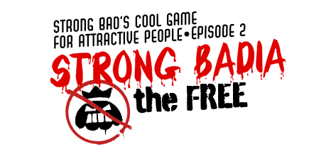

7 |
Introduction |
 |

Mes salutations, chers citoyens de Strong Badia! Si vous lisez ceci, vous avez passé la première épreuve, et vous êtes suffisamment séduisants pour jouer à Strong Badia the Free, le second épisode des cinq de cette série, Strong Bad's Cool Game for Attractive People. Mais ês-vous suffisamment séduisants pour conquérir le monde ?
La situation n'est pas facile pour notre héros, Strong Bad. Le tyrannique King of Town a créé un impôt injuste sur les e-mails et l'a mis aux arrêts ! Vous devez libérer Strong Bad de cet emprisonnement injustifié, et l'aider à unifier le peuple de Free Country USA sous le drapeau Strong Badian. Après cela, vous vous dirigerez vers le château pour confronter le King of Town ! Qui remportera la révolution ? Le peuple est-il prêt à accepter Strong Bad comme nouveau souverain ? |
 |
 |
 |